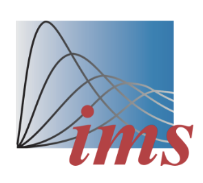

Welcome to SNAB 2025
The 2025 Workshop on Statistical Network Analysis and Beyond (SNAB 2025) will take place on June 2-4, 2025 at the renowned Hotel New Otani in Tokyo, Japan.
About the Conference
SNAB 2025 is a three-day workshop bringing together experts in network science and related fields. The conference serves as a platform for sharing cutting-edge research and fostering collaboration.
Topics Include:
- Statistical network modeling
- Tensor analysis and modeling
- Deep learning
- Transfer learning and multi-task learning
- Text analysis in network structures
- Applications in social, biological, and public health
Organizers
- Yang Feng (New York University)
- Jiashun Jin (Carnegie Mellon University)
- Qingfeng Liu (Hosei University)
- Maggie Xiaoyue Niu (Penn State University)
- Ji Zhu (University of Michigan)
Past SNAB Workshops
Sponsors
We are grateful to our sponsors for their support of SNAB 2025:

We look forward to seeing you at SNAB 2025 in Tokyo!